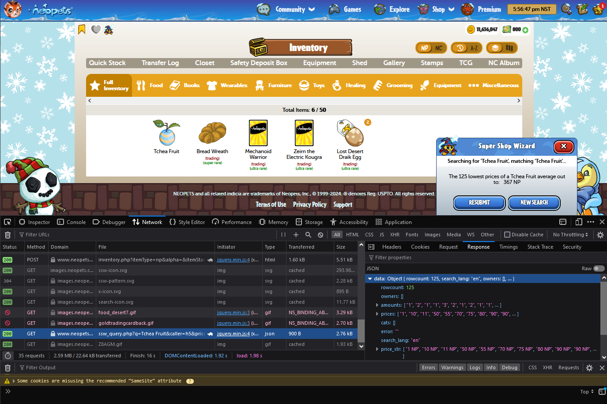
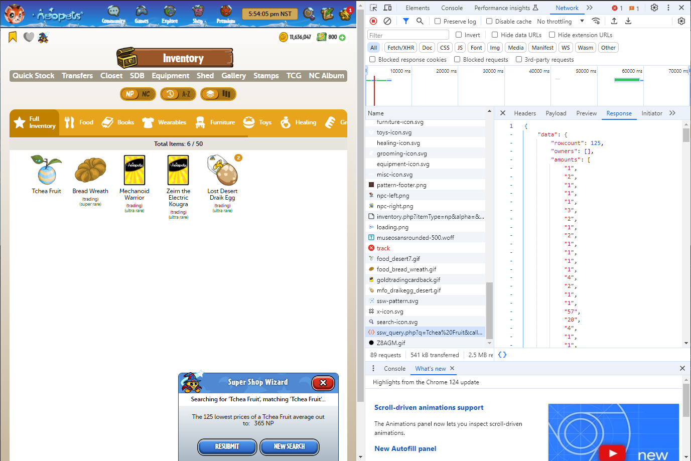

SSW Limit Workaround
Hey y'all! For those with Premium access, do you want a completely legal way of telling that SSW owl to go away and let you price your entire shop at once? Well, do I have the information for you!
What are you even talking about?
The SSW has some sort of counter that ticks up whenever you submit a request. I believe it ticks up to 40, and then you can no longer submit requests; you have to wait for the next hour to tick over. You have the option to select "Price Only" mode, which will return a single average price - but that's not very useful for pricing your shop. (It is, however, very useful for checking if something is UB or not). Price Only mode, from what I can tell, does not add to your SSW counter. However, if you have already exceeded your limit for that hour, it too will not show you results.
Turns out, behind the scenes, the data that SSW sends back is identical, but Price Only obscures the useful bits. But we can access the response data ourselves by inspecting the browser!
How to find the data:
- Right-click any browser page where you can access the SSW - the Inventory view works for now. Click Inspect in the menu popup. You should see a new frame pop up with a whole bunch of information.
- You're looking for a bunch of tabs such as Console, Elements, Inspector, Network etc. You may need to access a dropdown to see the rest of the tabs. Click the Network tab. The new display may ask you to refresh the page - do so as you normally would, the frame should stay open on your screen.
- Submit a SSW request for an item, and tick Price Only (make sure it's not something UB!). In the Network tab, in the Name (or File) column, look for something starting with "ssw_query.php?". If you look closer you can see the name of the item you searched is also in there. Click that line, just once.
- A new frame will open, with more tabs along the top. These should say things like Headers, Cookies/Payload, Preview, Response etc. (Again, you may need to access a dropdown to see the rest of the tabs). Click on Response. We now have useful numbers - this is the data that is usually returned with the SSW response, except we ticked Price Only so that damn owl hid the good stuff.
At this point your page should look similar to one of these below. Your view may vary slightly depending on your settings. Note that the raw data is displayed differently depending on whether you are using Firefox or Chrome. If you are using Firefox, you can click the arrows next to the response data to open up the chunks of data - or you can flick the Raw switch to see all the data as once (in one big looooooong line).
Firefox
Chrome
A quick rundown of the data here:
- Think of the table that usually pops up when you do a SSW search - you get the Account Name, the number in stock, and the prices. Most of that data is here, but broken up into columns.
- "rowcount" is the number of results (i.e the number of stores that have stock).
- "amounts" is the stock count for each store found.
- "prices" is that sweet number we want - all the known shop prices, cheapest first. "price_str" is the same data but with formatting.
Note that every time you submit a new SSW request, it will appear as a new entry. Follow Step 3 again, paying close attention to the information after the "ssw_query.php?" to find the right request. Requests are also ordered by time here, so the most recent request should be lowest in the list. You can also refresh the page to clear out some of the clutter if it's getting too hard to navigate.
Disclaimer
Yes, this does require digging through some of the site's code, but TNT has made it clear that they don't consider using the inspector as cheating. If one were to write a script that accesses this data, that would be no bueno. Please use this information responsibly!